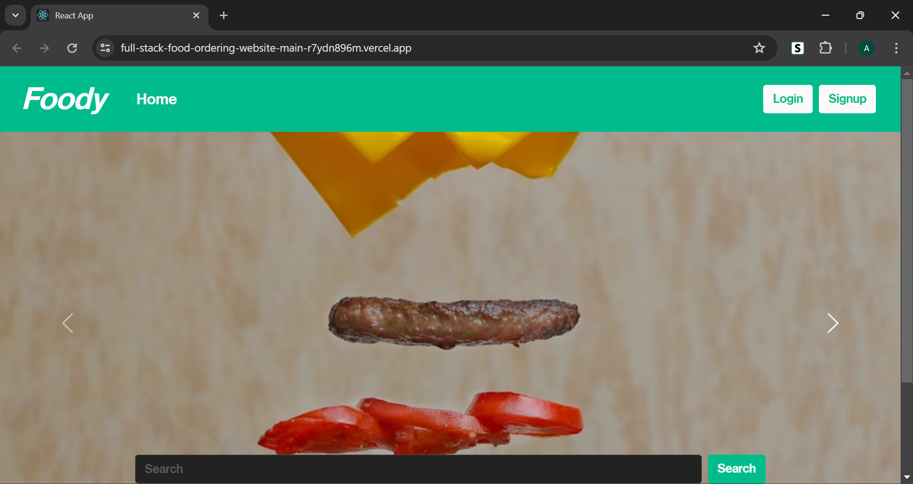
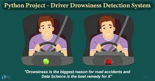

Projects
-
Full Stack Food Ordering Website
Developed a full stack food delivery application using the MERN stack with a focus on user-friendly React components. Implemented features for user authentication, shopping cart functionality, and seamless integration with a MongoDB database.
GitHub
Demo -
ConCent-SIH

Developed a responsive full stack web application for contact centers with a unified dashboard and API-based AI powered sentiment analysis providing one stop solution to the businesses. • The application is powered with a unified dashboard that provides real time data management of customers, products, geographical information, executive’s performance data along with modern data visualization.
GitHub
Demo -
Spam E-mail Detection

Developed and implemented a machine learning-based spam email detection system, leveraging natural language processing techniques and classification algorithms. Achieved high accuracy in identifying and filtering spam emails, contributing to enhanced email security and user experience.
GitHub
-
Next Word predictor

Designed a next-word predictor enhancing user experience in applications like text editors, messaging, search engines, and virtual assistants, by providing accurate and contextually relevant word suggestions for efficient typing.
GitHub
-
Early Drowsiness Detection System
Designed and implemented a sophisticated early drowsiness detection system for drivers, utilizing state-of the-art computer vision and machine learning technologies. The system proactively identifies signs of driver fatigue, such as eye closure and erratic head movements, and issues real-time alerts to prevent potential road accidents.
GitHub